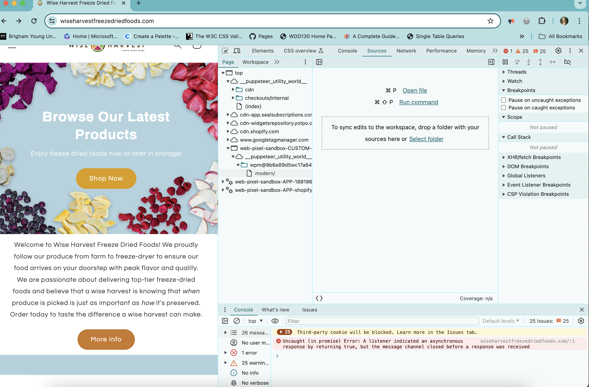

Source Panel Overview
The source panel is very useful! It allows you to see the files/resources that the webpage has loaded. You are able to edit CSS and JavaScript. You can load your file into the editor and it can help you debug.
I don't have a file to upload into the live editor at the moment. However, the screenshot above shows where you can open a file. Once that file is open, you can start editing it. You can create a workspace to save the changes to your files. The workspace requires you to run a local HTTP web server. If you do not make a workspace then the changes will be deleted once your page reloads.